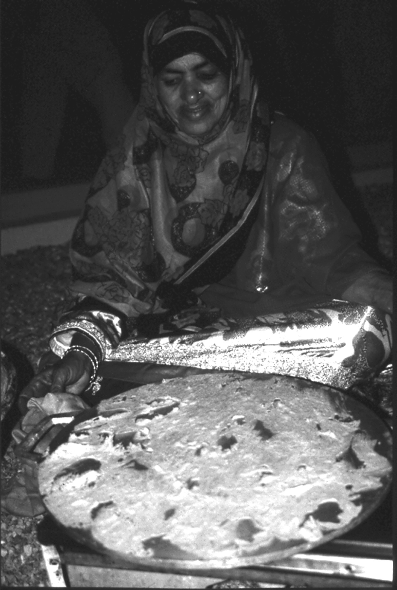

מַחֲבַת maḥabat – griddle, (baking-)plate
Semantic Fields:
Utensils
Author(s):
M.D. Koster
First published: 2014-06-28
Last update: 2025-10-10
Citation: M.D. Koster, מַחֲבַת maḥabat – griddle, (baking-)plate,
Semantics of Ancient Hebrew Database (sahd-online.com), 2014 (update: 2025)
(WORK IN PROGRESS)
Introduction
Grammatical type: noun fem.
Occurrences: 5x HB (3/1/1); 0x Sir; 0x Qum; 0x Inscr. (Total: 5)
- Torah: Lev 2:5; 6:14; 7:9;
- Nebiim: Ezek 4:3;
- Ketubim: 1 Chron 23:29.
1. Root and Comparative Material
A.1 Root. The hapax legomenon חֲבִתִּים in 1 Chron 9:31 which evidently refers to the priestly cakes baked on the מַחֲבַת seemingly points to a root ḥ/ḫbt. Because this root is rare in all Semitic languages, it was suggested early on that it might be connected with the well-known root ḥ/ḫbz which in many Semitic languages means ‘to bake’, cf. Arabic. ḫubz ‘flat bread’.1 However, Leslau rightly deems this proposal ‘unlikely’.2
From an etymological point of view a connection with the root ḥbṭ or the root ḥbṣ ‘to beat’3 is somewhat less unlikely (cf. English ‘batter’), but it is not a mixing bowl we are looking for.
If the root is ḥ/ḫbt indeed, not all problems are resolved, however, because the
grammatically correct form should have been מַחֲבֶתֶת*. Of course it is possible to surmise that this in turn was contracted to מַחֲבַת,4 but this is obviously a makeshift solution.
A possibility which hitherto does not seem to have been explored is that the root ḥbt is a denominative from a noun ḥabbat ‘grains, semolina’ which itself would have been derived from a root ḥbb (see below under Arabic).
A.2 Classical Arabic. Perhaps ḥabb, ḥabbat ‘grains, bread’; ḥabbāb ‘merchant of corn’; muḥabbab ‘full of grains’.5
A.3 Modern Egyptian Arabic. Perhaps ḥubūb ‘a dish prepared from wheat that has been soaked in water for two or three days, and is then cooked with sugar’.6
A.4 Modern Palestinian Arabic. Perhaps ḥabb, ḥbāt ‘grains’.7
A.5 Rabbinical literature. The word is not attested in Qumran. In Mishnah and Talmud מחבת is discussed several times, cf. Dalman8: ‘Das jüdische Recht (Men. V.8) unterscheidet maḥabat als deckellos oder flach von der mit Deckel versehenen oder tiefen marḥéšet: Platte und Pfanne oder Tiegel wären also wohl die richtigen Übersetzungen’.9 The חֲבִתִּים should be prepared in a special room in the temple,10 but מַחֲבַת and → מַרְחֶשֶׁת also formed part of the private household.11
2. Formal Characteristics
A.1 [Discussion will be added later.]
3. Syntagmatics
A.1 [Discussion will be added later.]
4. Ancient Versions
a. Septuagint (LXX) and other Greek versions (αʹ, σʹ, θʹ):
- τήγανον ‘frying-pan’:12 all instances, also for חֲבִתִּים in 1 Chron 9:31. The same word describes a fairly large instrument of torture by heat in 2 Macc 7:3, cf. the derivative verb in 2 Macc 7:5. In 2 Sam 13:9 τήγανον is the rendering of → מַשְׂרֵת, a baking-pan.
b. Peshitta (Pesh):
- ṭ[ʾ]gnʾ (Greek loanword = τήγανον): all instances, except 1 Chron 23:29, where it is left untranslated. Brockelmann: ‘sartago’;13 Payne Smith: ‘sartago’;14 Payne Smith (Margoliouth): Gr. τήγανον, ‘a grid iron, an instrument of torture’.
c. Targum (Tg):
- מסרתא or מסריתא: all instances. Apparently derived from the Hebrew term in 2 Sam 13:9. Jastrow: ‘a mould for frying a batter’, in gen. ‘pan’;16 Dalman: ‘Pfanne’.17
d. Vulgate (Vg):
- sartago ‘frying-pan, baking pan’,18 but 2 Sam 13:9 ‘quod coxerat’, 1 Chron 9:31 ‘[quae] in sartagine [frigebantur]’.
5. Lexical/Semantic Fields
A.1 [Discussion will be added later.]
6. Exegesis
6.1 Literal Use
A.1 In the first chapters of Leviticus the מַחֲבַת figures in the preparation of the מִנְחָה (grain-offering), together with the → תַּנּוּר (‘oven’) and the → מַרְחֶשֶׁת (‘frying-pan’). In Lev 7:9 the three of them are mentioned together: ‘Every cerial offering that is baked (תֵּאָפֶה אֲשֶׁר, cf. 6:10) in the oven and all that is prepared (וְכָל ־נַעֲשָׂה) in the frying-pan and on (עַל) a מַחֲבַת (SP: המחבת ‘the מַחֲבַת’)’- all these offerings shall be for the priest who offers it. This looks like a summary of the law on the מִנְחָה in the second chapter: it shall consist of fine flour (סֹלֶת, ‘wheat groats, semolina’), with oil (שֶׁמֶן) and frankincense (לְבֹנָה) (Lev 2:1). When it is baked in the oven this shall result in unleavened cakes (מַץֹת חַלּׂות) or unleavened wafers (מַץׂות רְקִיקֵי), mixed (בְּלוּלׂת) or spread (מְשֻׁחִים) with oil (Lev 2:4, cf. 7:12). Verses 5-6 describe the product obtained from a מַחֲבַת: if your offering (קָרְבָּנֶךָ) is a עַל ־הַמַּחֲבַת מִנְחָה, then it shall be of unleavened fine flour mixed (בְּלוּלָה, cf. v. 4) with oil (v. 5): after it has been broken into pieces (פִּּתִּים ... פָּּתׂות) you shall sprinkle oil on it (v. 6). The מִנְחָה from the frying-pan is also made of fine flour with oil (v. 7). Unlike v. 4, no word for ‘baking’ or ‘cooking’ is used in verses 5 and 7. Had this been indicated already sufficiently by the nouns used for the heating utensils themselves?
A.2 The use of the preposition עַל before מַחֲבַת in Lev 7:9 (as against בְּ for the other utensils) argues in favour of a ‘baking-plate’ on which the cakes are baked as distinct from the ‘frying-pan’. The מַץֹת that were baked on it, could be broken into pieces (cf. 6:14).
A.3 In Ezek 4:3 a בַּרְזֶל מַחֲבַת, ‘an iron griddle’ is mentioned (cf. 6.2 Figurative Use). Probably also the ‘griddle’ in the tabernacle/temple (Lev 6-7) was an iron plate, although griddles of clay were and are known to exist too (see 6.4 Archeology). Obviously heavy use made iron a more practical material. Kelso considers copper a suitable metal too. The griddle cannot have been small because the cakes baked on it had to be broken into pieces and because several cakes were baked on it at the same time. Also the rendering of the LXX points to a fairly large object (see 4. Ancient Versions). However, there is no indication of its exact shape or size in Lev 2:5 and 7:9.
A.4 For the offering on the day of the anointing of the high priest Lev 6:13(20) mentions a tenth of an ephah of fine flour: half of it in the morning and half in the evening. On the basis of the traditional content of an ephah (about 35 litres20) just under two litres should cover the מַחֲבַת each morning and evening. A plate of about 40 cm (16 inches) diameter (or: length and width) would then be required. However, since it is impossible to establish the capacity of the ephah with any degree of certainty (→ אֵיפָה), the real dimension of the מַחֲבַת remains in doubt.
A.5 In the description of Lev 6:14, the מִנְחָה is made again ‘on a griddle with oil’ (בַּשֶּׁמֶן עַל ־מַחֲבַת). The dough had to be מֻרְבֶּכֶת - the meaning of the latter particple of the Hofal is disputed.21 On the basis of Lev 7:12, where it goes together with בְּלוּלׂת ‘mixed’, it has often been rendered ‘well-mixed’, but exactly the proximity of the two terms suggests a different meaning, possibly ‘decocted dough’, dough heated until all water has evaporated (cf. Akkadian rabāku ‘to decoct, reduce’).
A.6 1 Chron 23 describes the subdivision of the Levites and their tasks. These included assisting the Aaronites in ‘the care for the courts and the chambers, the cleansing of all that is holy’ (v. 28, cf. 9:26), continued in v. 29 (cf. 9:29.31-32) with (the care) for the showbread (הַמַּעֲרֶכֶת לְלֶחֶם, cf. 9:32), for the fine flour, the cereal offering, and the wafers of unleavened bread (הַמַּץׂות וְלִרְקִיקֵי לְמִנְחָה לְסֹלֶת, see above, Lev 2:4, cf. 7:12), for the baking plate (לַמַּחֲבַת), for the ‘decocted dough’ (לַמֻּרְבָּכֶת), and for ‘all measures of quantity and size’. In this series it would appear that מַחֲבַת does not signify the baking-plate proper, but stands for its products, that which in 1 Chron 9:31 is indicated with הַחֲבִתִּים (from the same stem, see 1. Root and Comparative Material). In this connection, it could also be a matter of debate whether ‘all measures of quantity and size’ should be understood as (watching over) ‘the required quantity of the offerings’,22 or as (taking care of) ‘the measuring vessels’.
6.2 Figurative Use
A.1 In Ezekiel 4-5 Yhwh instructs the prophet to perform a number of symbolic acts.23 In Ezek 4:1-2 he engraves in the still soft clay of a brick a plan of the city of Jerusalem and surrounds it with the whole armoury of the siegeworks of his days: a siege wall, a mound, camps of the besiegers, and battering rams all around. In v. 3 he has to take a בַּרְזֶל מַחֲבַת, apparently ‘A household utensil which would be close at hand’.24 The prophet has to put it as a wall of iron (בַּרְזֶל קִיר) between himself and the city. From behind this wall he shall fasten his eyes (literally: his face) on her, bringing her in a state of siege and hemming her in. This will be a sign for the house of Israel. Again, nothing is said about the shape of the iron plate, but in this case a rectangular shape seems obvious. Because Ezekiel must represent the attackers, the iron plate between him and the city could be understood as the iron armour-plating protecting the warriors operating the battering rams (כָּרִים, v. 2) from the arrows of the defenders.
A.2 So the iron baking plate seems to convey the message that God will protect the enemies instead of sinful Jerusalem. In addition to the symbolic act of vv. 1-2, the severity and irrevocability of Yhwh’s intention are emphasized by the iron plate and by the relentless gaze of the prophet: ‘Härte, Undurchdringlichkeit und Unzerbrechbarkeit der Platte verbildlichen die entsprechenden Züge an Jahwes Tun’.25
6.3 Pictorial Material
A.1 Cf. Dalman, AuS, Bd. 4, Abb. 9-12; Galling, BRL2, 30, Fig. 1; Avitzur, 107-8 (both rectangular and circular griddles); LBI, 145, Fig. 70b.
6.4 Archeology
A.1 Galling, BRL2, 29-30 (art. ‘Backen und Backofen’ [M. Kellerman]). Baking plates of clay have been unearthed in Megiddo and Taanakh. [More will be added later on].
7. Conclusion
A.1 All evidence points to the meaning ‘griddle, baking-plate’ (Backplatte) for מַחֲבַת, as distinct from the → תַּנּוּר (oven) and the → מַרְחֶשֶׁת, (frying-pan, cf. Lev 7:9, discussed in 6.1 Literal Use).
A.2 In scholarly works one often finds references to the Arabic ṣāǧ, a circular, convex iron plate to bake very thin bread on.26 It could help us to form our idea of the מַחֲבַת of TeNaKh. However, griddles come in different shapes, also rectangular and flat. The plate is placed on some stones and is heated by a charcoal fire.
A.3 At least in the case of Ezek 4:3 (where it is of iron, see 6.2 Figurative Use) it seems to have had a rectangular shape, not unlike modern flat griddles, though the heating will have been far less sophisticated in Antiquity.

Baking wafer-thin bread on a round iron griddle in Oman
(photo Janny de Moor).
A.4 There is archaeological evidence for ceramic baking-plates, but Ezek 4:3 proves that also iron griddles were in use. ‘It may be of iron in every instance, as in Ezek iv,3, but the purpose would earlier be served by convex discs of pottery’.27 ‘A ceramic disc would be the griddle of the common man of all periods’, etc.28
A.5 The מִנְחָה-offering of Lev 2 could be home-made, but those prepared by the priests (Lev 6 and 7, cf. 1 Chron 9 and 23) were made in the temple. According to later tradition there was a special room in the temple for baking the מִנְחָה (see 1. Root and Comparative Material, Rabbinical Literature). Because of the heavy use the מַחֲבַת in the temple surely would have been made of iron.
A.6 In 1 Chron 23:29 מַחֲבַת rather indicates the product of the baking plate, like its cognate חֲבִתִּים in 1 Chron 9:31. This product consisted of a thin, hard-baked cake, made from fine grain mixed with oil, that should be broken into pieces (Lev 2:6, 6:14).
Bibliography
For the abbreviations see the List of Abbreviations.
Dalman, AuS, Bd. 4, 42f., 66, 125:
‘Platte’; pfannenähnlich (Bd. 7, 211)
B. Baentsch, Exodus, Leviticus, Numeri (HKAT, 2), Göttingen 1903, 316: ad Lev. 2:5;: ‘rundes, eisernes Backblech, wie sie noch heute bei den Bed. i. Gebr. sind, Burckhardt, Bed. 46’
BDB, 290a:
‘flat plate, pan, or griddle for baking’; 2. Ezek
4:3 ‘a plate of iron’
BRL2, 30a: ‘Backplatte’
G.A. Cooke, The Book of Ezekiel (ICC), Edinburgh 1936, 51
Kelso, CVOT, No. 51: ‘flat disc/pan or griddle’, ‘a
pan-cake griddle’
Alonso Schökel, DBHE, 391: ‘Sartén’
DCH, vol. 5, 214b: 1a. ‘griddle,
baking tray of clay or iron, for grain offering’,
b. Ezek 4:3 ‘plate’; 2. 1 Chron 23:29 ‘cake,
baked on griddle’
GB, 412b: ‘eiserne Platte z.
Backen u. Rösten’
HAHAT, 656: ‘1. Backplatte, aus Eisen Ez 4,3, f. Speiseopfer Lv 2,5. 6,14. 7,9. - 2. Pfannengebäck 1Ch 23,29’
HALAT, 537b: 1. ‘(metallene)
Platte, Blech zum Röösten u. Backen’; 2. 1 Chron.
23:29 ‘Plattengebäck’
HAWAT, 217a: ‘Tiegel’
HCHAT, Bd. 1, 720: ‘Russtiegel, -pfanne, worin Brodfladen gebacken wird’
A.M. Honeyman, ‘The Pottery Vessels of the O.T.’, PEQ 1939, 76-90 (84, No. 11): ‘The references are all late (...) a griddle on which a sort of pancake, made of oil and flour, was baked or fried’
HWAT, 336: ‘ein flaches Blech zum Backen’
KBL, 511b: ‘(metallene) Platte
(z. Rösten u. Backen) griddle (of metal; for
frying a. baking)’
Stager, LBI, 66-67, 145, Fig. 70b
LHA,
425a/b: ‘sartago, vas planum metalleum in quo
panis coquitur’
MHH, 598: חרס או נחושת אף ... ברזל כלי
J. Milgrom, Leviticus 1-16 (AncB, 3), New York 1991
Forbes, SAT, vol. 6, 63:
‘(frying-) pan (flat metal plate)’
Gesenius & Roediger, TPC, 444a: ‘sartago’
Å. Viberg, Prophets in Action: An Analysis of Prophetic Symbolic Acts in the Old Testament (CB.OT, 55), Stockholm 2007
W. Zimmerli, Ezechiel (BK 13/1), Neukirchen 1969.
-
So e.g. Gesenius & Roediger, TPC, 443; Fürst & Ryssel, HCHAT, Bd. 1, 374; GB, 412; Klein, CEDHL, 207. ↩
-
Leslau, CDG, 257. ↩
-
Suggested by Lewy, WTM,Bd. 2, 13. ↩
-
Thus already Gesenius & Roediger, TPC, 444a. ↩
-
Lane,AEL, 496-7; Kazimirski, DAF, 363-4; Dozy, SDA, 239-242. ↩
-
Kazimirski, DAF, 364. ↩
-
Barthélemy, DAFA, 141. ↩
-
Cf. Dalman, AuS, Bd. 4, 42. ↩
-
See also AuS, Bd. 7, 211; Forbes, SAT, vol. 6, 63. ↩
-
Men. XI.3; Mid. I.4, cf. Tam. I.3 - AuS, Bd. 4, 42, cf. 66. ↩
-
Men. V.8, Sifra, 11a, cf. Ezek 4:3! - AuS, Bd. 4, 42. ↩
-
GELS, 678a. ↩
-
Brockelmann, LS, 268. ↩
-
Payne Smith, TS, 1431. ↩
-
Payne Smith (Margoliouth), CSD, 167b. ↩
-
Jastrow, DTT, 812a. ↩
-
Dalman, ANHT, 244b. ↩
-
Lewis & Short, LD, 1632. ↩
-
Kelso, CVOT, 23. ↩
-
Cf. De Vaux, IAT, t. 1, 306-09, a.o. ↩
-
Milgrom 1991, 399-400. ↩
-
Thus De Vaux, IAT, t. 1, 297-298. ↩
-
Cf. Viberg 2007, 182-207. ↩
-
Cooke 1936, 51, cf. Zimmerli 1969, 114: ‘Aus den Haushaltsgeräten herausgegriffen’. ↩
-
Zimmerli 1969, 114. ↩
-
E.g. Dalman, AuS, Bd. 1.D, 39-73. ↩
-
Honeyman 1939, 11. ↩
-
Kelso, CVOT, 51. ↩